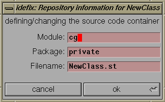
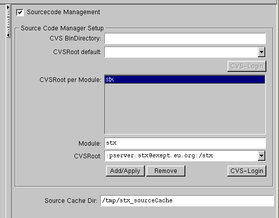

CVS itself is based upon RCS (revision control system), both are available free of charge through various FTP cites and/or freeware CD publications.
The choice for using CVS was due to its support of stateless sourcecode handling (i.e. source files do not have to be locked while being edited) and by handling complete hierarchies of sourcecode, including multiple revisions, tagging of releases, branches on top of all of the RCS functionality.
In addition, CVS allows access to the repository either directly through the file system
(i.e. by keeping the repository locally or NFS-mounting a remote repository) and
via TCP/IP, through a server mode.
This makes CVS perfect for geographically distant workgroups.
In fact: within the ST/X developer group,
two members are located some 50 kilometers away, accessing the companies repository via modem/ISDN,
customers have up-to-date read-only access to the ST/X CVS-repository via TCP/IP,
and the rest of the world now has read-only access to a nightly synchronized copy
of a part of the ST/X CVS repository on (http://exept.eu.org).
If you do not want to use CVS, and another sourcecode management system is to be used,
you have to write your own class, which provides the interface and functionality
of CVSSourceCodeManager and install it by binding the
global smalltalk variable "SourceCodeManager" to it.
(For an experienced smalltalker, this should be pretty straightforward:
only a few methods have to be redefined there.
Most work is done in its abstract superclass: AbstractSourceCodeManager.)
Access to the source containers is not limited or specific to ST/X; all repository manipulations are also possible by shell commands - it is therefore possible (and easy) to add automatic extraction and building via shell commands scripts.
NOTICE:
At the time of this writing, the Win32 version of CVS only supports
the client mode - i.e. it is not possible to setup a cvs repository server on a Win32 machine.
Win32 users will need a Unix server for their source repository
(which is not a bad idea b.t.w - for various other reasons ;-)
Setting up the CVS Repository
Unless your system alread has the CVS sourcecode management package
installed and operating
(most linux systems will have),
you have to get the CVS distribution from some place, possibly compile it,
and install all of its commands to be found along your PATH.
For Unix/Linux, we recommend placing the executables into "/usr/local/bin";
for windows the installation typically asks for a directory where the binaries are to
be installed. Remember this, as you may need this path later unless the binaries
are included in the standard PATH. For example, on most of our windows systems,
the cvs used is the turtoise-cvs and it installs to
"c:\programs\turtoisecvs\bin\cvs.exe".
We also highly recommend that you have a look at the CVS documentation
and manual pages - not all required maintenance activities
are supported on the smalltalk level.
Also, please do not trust on every detail described below;
by the time you read this, new CVS versions may behave slighlty different.
As a quick check for a working CVS command set, see if
the following CVS commands are available on your system:
cvs cvsinit (cvs1.6 only)
The following description is valid for CVS versions 1.6 through 1.8;
we cannot guarantee, that the commands work the same with newer releases.
If there are any incompatibilities, consult the CVS manual pages, go back to a supported
version, let us know or fix the CVSSourceCodeManager class.
As a next step, you should create a repository, which will hold your source tree. This has to be done only once, and is therefore not supported by a fancy ST/X user interface.
We recommend using an absolute pathname to a symbolic link, which points to the actual physical repository. Doing so enables you to move the repository to some other place, without affecting any settings. Also, remote machines can easily NFS-mount the repository to wherever they like, and set a corresponding symbolic link.
Within eXept we use a common repository path of "/cvs/stx"
on all machines, which is a symbolic link to a local directory on the source code server
machine itself, and a symbolic link to the NFS mounted directory on all other machines.
(Added 2012: this has been no longer true for quite some time now: we no longer
compile on the server machine itself, and use ":pserver:cvs.exept.de:/cvs/stx" as CVSROOT on all
remote machines)
Assuming, your source repository is to be called "/cvs/stx",
enter the following shell commands:
CVSROOT=/cvs/stx
export CVSROOT
cvsinit (cvs rev1.6) / cvs init (cvs rev1.8)
Creating the /cvs/stx/CVSROOT directory...
Creating a simple /cvs/stx/CVSROOT/modules file...
Creating a simple /cvs/stx/CVSROOT/loginfo file...
Creating a simple /cvs/stx/CVSROOT/commitinfo file...
Creating a simple /cvs/stx/CVSROOT/rcsinfo file...
Creating a simple /cvs/stx/CVSROOT/editinfo file...
Creating a simple /cvs/stx/CVSROOT/rcstemplate file...
Creating a simple /cvs/stx/CVSROOT/checkoutlist file...
Copying the new version of 'commit_prep'
to /cvs/stx/CVSROOT for you...
Copying the new version of 'log_accum'
to /cvs/stx/CVSROOT for you...
Copying the new version of 'cln_hist'
to /cvs/stx/CVSROOT for you...
Enabling CVS history logging...
All done! Running 'mkmodules' as my final step...
In fact, the rev1.8 "cvs init" command is silent.
If ST/X was already running, it has to be either restarted
(since the CVSROOT setting has already been checked, during early startup of ST/X)
or alternatively, reinitialize the CVSSourceCodeManager class
as described below.
Do not forget to set the CVSROOT shell variable to the name of your
repositories directory - a good place to do this is your ".profile"
or ".login" file:
CVSROOT=/cvs/stx
export CVSROOT
setenv CVSROOT /cvs/stx
CVSROOT=:pserver:<my_cvs_host>:/cvs/stx
You can also define the repository and reinitialize the
class in a workspace or from your "private.rc" startup script:
CVSSourceCodeManager initializeForRepository:'/cvs/stx'.
~/.smalltalk/settings.rc".
The source repository is protected from unauthorized access by the usual UNIX file access protection mechanisms - so you may want to limit read/write/execute access as appropriate. (but if you work in a group, do not forget to provide group access, and add the participating users to a corresponding group.
After that, CVS is ready to be used with ST/X.
Automatic Source Access via the Revision Management
All access to a classes source (i.e. from within the browser's or the debugger)
is via the sourceCodeManager, if activated.
After a classes source has found its way to the repository,
there is no longer any need to keep individual source files in the source directory.
Whenever a classes source is requested for, the sourceCodeManager is asked for the
source code corresponding to the classes version.
(this statement is not valid for your ST/X system classes
- unless you create a container
for them and check them into the repository as well.)
"/tmp/stx_sourceCache";
the path to the cache directory is found and can be changed via the launcher's settings
menu (or be set in a "private.rc" file).
In contrast to the above, ST/X uses a two level naming scheme,
organizing classes into so called modules and packages.
This helps to avoid conflicts arising when packages from different vendors are
named alike - by prefixing a vendor-specific module name,
it is possible to identify the source files
within the repository - even if the same package names are used.
In addition, ST/X can use the module part to switch between multiple
CVS roots - i.e. it is possible to place different projects onto
different CVS servers.
The launcher's source-and -debugger setting dialog allows for individual CVSRoots
to be specified (per module).
For example, a setup could define remote CVS access via the eXept CVS server
for all classes under the "stx"-module,
and local access to all your own packages (on your local server).
Since CVS does not distinguish between modules and packages, ST/X concatenates the smalltalk-module name and smalltalk-package name when forming a CVS module name.
By convention, the smalltalk-module should always be your company's name
(for modules which are considered to be ``global''),
and your own user name (for modules which are ``local'').
All original smalltalk code as distributed
was defined under a special module called "stx".
Treat this as a reserved name; i.e. never create a module called "stx".
Within a smalltalk-module, multiple smalltalk-packages can be present;
for example, the ST/X basic classes are all registered under
the "libbasic"-package under the "stx"-module.
The package need not be located directly under the module - you may insert
intermediate levels, to further organize your repository. For example,
some classes of the original system are packaged as "goodies/persistency/...".
"/cvs/stx" as repository, create it as a symbolic link
to your actual repository.
"stx" is reserved for all original smalltalk code
"private" as module name
The following sections describe various day-to-day uses and how to perform typical
tasks.
Adding a new Class to the Repository
When you have finished a first version of a new class,
you may want to add it to the source repository.
In a systemBrowser, select the


(Notice: in the New-SystemBrowser, this dialog appears when you checkIn a class for the very first time).
Change the module- and package-name as appropriate and click on "ok".
You can also define a different source file name
to be used for the class - although this is not recommended
(it keeps things simpler, if source files
are named after the class).
After a positive confirmation, all intermediate package directories are created
(with lots of confirmations ;-),
and eventually, a new sourcecode container is created within the repository as:
$CVSROOT/<module>/<package>/filename,v
(this is a regular RCS container - read the
RCS manual pages for more information)
and the classes sourcecode is checked into the repository as initial version.
As a side effect, a method named #version will be created in the
class protocol, if not already present.
This method is defined to return the classes version as a string.
Never manually modify this method, since its return value is later used
by the sourceCodeManager, to find a classes correct source.
You will be asked to confirm the creation of this method.
Checking a new Version of a Class into the Repository
You should update a class in the repository
whenever some major change was made and the changes have been tested.
To check a changed class into the repository, select the browser's
If you did not create a container as described in the previous section,
you will now be asked again.
After the confirmation, 3 things may happen:
#version method,
old versions of that class (for example, those living in old snapshot images,
or being executed by other users) can still correctly extract their corresponding
source code from the container.
In this case, CVS is able to merge the two changed versions into a new one automatically.
ST/X pops up a difference view, which shows the original version,
your version and the merged version side-by-side, with affected lines color-highlighted.
It is up to you, to check if the other changes do not conflict with yours (they almost always do not - but it does not hurt, to have a look anyway).
If you proceed, the merged version will be entered into the repository as described above.
In this case, CVS cannot automatically merge the changes, and manual actions are
required.
ST/X pops up a box telling you who did the conflicting change.
You have a chance of either look at the conflicts in more detail or resolve the conflicts.
To resolve the conflicts, an editor containing a merge of
the repository version and your current versions
is opened. In this text, conflicting regions are color-highlighted. You should edit the
text, by fixing the conflicts and finally accept & close this editor.
This edited version will be checked into the repository as the newest version.
Be very careful, when editing - no syntax checking is done and the resulting source
is checked in without further validation. It is a good idea to reload the class from the
repository (see below) to validate its correctness.
We are aware of the fact, that this is somewhat inconvenient, and future versions
of ST/X will contain a changesBrowser-like interface for conflict resolving.
However, this kind of conflict occurs very seldom
(over all of ST/X's lifetime, there have been only a few of them)
therefore, you will probably never run into this trouble.
To update, the other users should use the browser's
By the way: CVS (actually: RCS) only stores the change-delta between versions.
Under normal situations, those sourceContainers do not grow to huge files over time.
Checking out (loading) a Class from the Repository
Any version of an existing class can be loaded (i.e. filed-in) from the repository by activating the
browsers
You are asked for a version number - if left blank, the newest version is loaded.
In order to protect your existing class (in the running image) in case of a corrupted class load,
your original class will be renamed and kept as "<className>_saved".
Thus, if anything fails, reinstall the original class
(by renaming the saved class back to the original name)
and blame the other guy who checked in the garbage.
If the loaded class looks ok and works, you should remove the saved backup class.
Notice, that the old class may be kept alife (as anonymous class), if there were
instances of it AND the instance layout has changed in the new version
(i.e. if instance variables were added or removed).
To physically get rid of the old class, all instances of it must be removed (i.e. unreachable)
and no references via global variables may exist.
You can clear out instances with:
someClass allInstancesDo:[:inst |
inst becomeNil
]
To load new classes (i.e. classes which are not contained in your image), select the
This asks for a module, package and class (or container-) name and files-in whatever is found there.
Use this, to load new classes which were brought into the repository by others.
Comparing a Class with any Repository Version
The browser's class menu contains an item
(
'revision log' item
lists changes made to the selected class in chronological order.
In addition, some nice-to-know information about the class concerning its source repository and current version is displayed.
Use this, to find out who made a change, why he did it and when it was checked into the repository.
A typical revision log looks like:
**** Loaded classes binary information ****
Binary based upon : 1.185
**** Classes source information ****
Filename ........ : NewLauncher.st
Revision ........ : 1.185
Checkin date .... : 1996/09/07 12:42:13
Checkin user .... : cg
Repository: ..... : stx
Directory: ...... : libtool
Container ....... : /cvs/stx/stx/libtool/NewLauncher.st,v
**** Repository information ****
Total revisions: 185
Newest revision: 1.185
revision 1.185 date: 1996/09/07 12:42:13 author: cg
only show sourceCodeManager items, if its present
revision 1.184 date: 1996/09/07 11:34:33 author: ca
rightMargin
revision 1.183 date: 1996/09/05 19:57:30 author: cg
checkin from browser
revision 1.182 date: 1996/09/05 13:37:06 author: ca
....
....
The next section gives the classes logical version as extracted from the classes version string. Notice, that this may be different from the binary version, in case of a changed class which was checked-into the repository.
The third (and most interesting) part logs the changes by data & time.
Getting Information about Changes to the Repository
Another useful list is generated by the browser's
This function first asks for a starting date and then
lists all of the repository changes since that date. The date can be entered
symbolically (such as 'yesterday', 'last year'
or 'a month ago'), by giving a time (i.e. '05:00'),
or a numeric date (i.e. mm/dd).
This is useful, to get a list of changes made by others within a workgroup (use this in regular intervals, overnight, after a weekend, or when returning from vacation ;-).
Its output typically looks like:
**** source repository history since yesterday ****
date time user file rev module/package
09/09 10:00 stefan TableView.st 1.18 stx/libtable
09/09 10:24 stefan TableColSpec.st 1.9 stx/libtable
09/09 10:24 stefan TableColView.st 1.15 stx/libtable
09/09 10:25 stefan TableView.st 1.19 stx/libtable
09/09 10:30 stefan PipeStr.st 1.44 stx/libbasic
09/09 13:29 cg ByteArray.st 1.69 stx/libbasic
09/09 16:56 cg BrwsrView.st 1.165 stx/libtool
09/09 16:58 cg RsrcPack.st 1.36 stx/libview
09/09 16:59 cg HTMLDocGen.st 1.32 stx/libbasic3
09/09 17:01 cg CVSSCMgr.st 1.93 stx/libbasic3 current: 1.95
09/09 17:02 cg HTMLParser.st 1.20 stx/libbasic3
09/09 17:04 stefan Smalltalk.st 1.171 stx/libbasic current: 1.170
...
...
The command line interface to CVS provides a whole bunch of additional commands
for statistics and logging information.
For special needs, use those commands (either in the fileBrowser or read it through a
PipeStream).
Attaching to eXept's ST/X Repository
Starting November 2003, most of eXept's ST/X CVS repository is mirrored on host "exept.eu.org"
with nightly synchronization and readonly access for everybody.
If you want to attach your running Smalltalk to this repository to compare classes against the newest version or to get new patches, proceed as follows:
cvs -d :pserver:stx@exept.eu.org:/stx login
In the CVSRoot-per-Module section, add an entry by entering:
"stx"
into the module field, and
":pserver:stx@exept.eu.org:/stx"
into the CVSRoot field.
Leave the default CVSRoot definition empty or as appropriate for your local CVS operation.

Press "Add/Apply" in the per-Module section and "Apply" at the bottom of the Dialog.
"stx"-module will be fetched from
the eXept repository.
We are sorry - for the moment, there is no good system-wide update
mechanism implemented (although, multiple classes or packages can be selected and a
bulk-update can be done in the browser).
This will be added in one of the next releases.
Notice:
The above setup will use the eXept repository only for classes
under the "stx"-module tree.
If you want to use a local CVS for your own project files,
either set the CVSRoot for your module or set the default CVSRoot (i.e. for all other module roots).
In any case. make sure that your own classes are under a different module top;
we recommend using something like Setting up a Local CVS (For Your Projects Only)
You may want to setup a CVS repository for your own projects,
while avoiding access to eXept's repository for all of ST/X's
base classes (as described above).
This is done as follows:
Therefore, the following description is targeted at the sourceCode
administrator - not at the average user.
Cleaning History Logs
CVS keeps a history log file (if installed with default options),
which may grow pretty large over time. This history log keeps track
both of changes made in the repository and of all checkout operations.
This history log has nothing to do with a source containers individual revision log (which is held in the container itself). Therefore, the operations below do NOT destroy your version logging information.
To avoid filling up your disk,
you may want to either remove this history-log file or remove some entries
from time to time. The history log is located in the repository an named:
$CVSROOT/CVSROOT/history
Each entry in this file consists of a single ascii line. The first character is one of:
These can be cleaned by:
cd $CVSROOT/CVSROOT
grep -v "^O" history | grep -v "^U" > history.new
mv history.new history
cd $CVSROOT/CVSROOT
grep -v "^O" history | grep -v "^U" | grep -v "^G" | grep -v "^C" > history.new
mv history.new history
Since the log entries are in chronological order,
another alternative is to remove the first n entries
(and/or keep them in some old-history file):
cd $CVSROOT/CVSROOT
numEntries=`cat history | wc -l`
head -10000 history > history.old
tail -$numEntries history > history.new
mv history.new history
cd $CVSROOT/CVSROOT
echo > history
cd $CVSROOT/CVSROOT
rm history
Although possible, we do NOT recommend to simply move the container (i.e. the ",v"-file), since that would make a checkout of previous versions impossible (remember, that the container in "foo:private" might still be required to reconstruct a previous release).
The best solution is to:
cd CVSROOT
cp foo/private/MyClass.st,v foo/project1/MyClass.st,v
cd WORKTOP/foo/project1
cvs upd MyClass.st
cd WORKTOP/foo/private
rm MyClass.st
cvs remove MyClass.st
cvs commit MyClass.st
This is a temporary lock, which is set by CVS during the checkin operation.
You should wait for a while and retry the checkin - after all, another member of your
workgroup could be in the middle of a checkin operation ...
... if the second attempt fails again, verify that noone is active in the repository.
If this is the case, manually remove the lock file in the repository.
The lock file is found in "<repository>/<module>/<package>"
directory, and named ",<filename>,v," - i.e. comma-rcsFile-comma.
This error originates in CVS, which not always cleans up its lockfiles in case of
an aborted repository operation.
Look for newer version of CVS and - if appropriate - update your installation.
In any case, consult a sysadmin or your sourceAdministrator
to have a look at leftOver locks.
Time Synchronization Problems
CVS is quite sensitive to unsynchronized processor times: if multiple systems access the
repository, AND the time/date setting on some machine is out of sync, an error message
may be reported, that checkin is impossible due to a backward timewarp.
(i.e. your machines time is behind the date of the repository version).
If the time delta is in the order of an hour (which is often the case, if daylight saving time is not correctly switched on a system), you can wait for that time and retry the checkin.
However, the real fix is to synchronize your clocks - since the trouble will be persistent and may reoccur with the next checkin attempt.
If everything else fails, temporarily change the modification time of the repository container for the checkin to proceed. After the checkin, change the time back to a reasonable value (i.e. touch the file).
In any case, consult a sysadmin and ask him to synchronize the clocks.
Removing Containers
There is no browser interface to
remove a classes source revision or to physically
remove a source container (the browser's remove container operation
only performs a logical remove; actually the container
is renamed into a separate Attic
directory - it will still be physically present, in case someone needs to
checkout an older revision).
The reason for this behavior
is simply that the system cannot know (or find out), if there are any
smalltalk executables or snapshot images around, which still require that particular
class or version of it.
Therefore, within a workgroup, it is not up to individual users to remove containers.
This operation has to be done by an administrator, who has to manually remove a container
(or package directory) - either via shell commands, or via the fileBrowser.
Removing Directories
Packages cannot be removed via the browser; to make things worse,
they cannot even be removed via regular CVS commands on the client
side.
In order to remove a package, you must login to the CVS server host
(or chdir to the CVS root), and manually remove directories.
Due to a bug in the CVS client, a followup "cvs upd" will fail, and report a missing directory (at least with CVS up to version 1.9.28), because the removed directory is still listed in the CVS/Entries file.
To remove a package directory, you have to:
These programs are provides by eXept for your convenience - especially, if you do not have direct access to an internet ftp server. All of them are freely available through various other sources, such as source CD compilations, ftp servers or mail reply servers.
These programs are provided by eXept "AS IS", without any express or implied warranty. At no time shall eXept be liable for any direct, indirect, incidential, special, exemplary, consequential or whatsoever damages.
 Copyright © 1996-2003 eXept Software AG, all rights reserved
Copyright © 1996-2003 eXept Software AG, all rights reserved
<cg@exept.de>